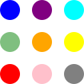

<!DOCTYPE html>
<html>
<head>
  <title>Customised BASE</title>
  <meta name="description" content="Demo of a customised BASE application">
  <!-- aframe library -->
  <script src="https://aframe.io/releases/0.6.0/aframe.min.js"></script>
  <!-- base library. distributed via 'npm run dist' in https://github.com/archilogic-com/base-query -->
  <script src="https://code.archilogic.com/base-query-0.0.5-nightly.js"></script>
  <!-- base components -->
  <script src="../components/data3d.js"></script>
</head>
<body>

  <!-- Custom loader; positioned above everything else (z-index) and spanning the entire page; will be removed once loading is finished -->
  <div id="loader" style="position: absolute; text-align: center; left: 0; top: 0; z-index: 20; width: 100vw; height: 100vh; background:white">
    <svg style="display:block; position: relative; left: calc(50vw - 150px); top: calc(50vh - 150px);width:300px; height: 300px;" viewBox="0 0 110 110" xmlns="http://www.w3.org/2000/svg" fill="#fff"><circle cx="12.5" cy="12.5" r="12.5" fill="#00f"><animate attributeName="fill-opacity" begin="0s" dur="1s" values="1;.2;1" calcMode="linear" repeatCount="indefinite"/></circle><circle cx="12.5" cy="52.5" r="12.5" fill-opacity=".5" fill="green"><animate attributeName="fill-opacity" begin="100ms" dur="1s" values="1;.2;1" calcMode="linear" repeatCount="indefinite"/></circle><circle cx="52.5" cy="12.5" r="12.5" fill="purple"><animate attributeName="fill-opacity" begin="300ms" dur="1s" values="1;.2;1" calcMode="linear" repeatCount="indefinite"/></circle><circle cx="52.5" cy="52.5" r="12.5" fill="orange"><animate attributeName="fill-opacity" begin="600ms" dur="1s" values="1;.2;1" calcMode="linear" repeatCount="indefinite"/></circle><circle cx="92.5" cy="12.5" r="12.5" fill="#0ff"><animate attributeName="fill-opacity" begin="800ms" dur="1s" values="1;.2;1" calcMode="linear" repeatCount="indefinite"/></circle><circle cx="92.5" cy="52.5" r="12.5" fill="#ff0"><animate attributeName="fill-opacity" begin="400ms" dur="1s" values="1;.2;1" calcMode="linear" repeatCount="indefinite"/></circle><circle cx="12.5" cy="92.5" r="12.5" fill="red"><animate attributeName="fill-opacity" begin="700ms" dur="1s" values="1;.2;1" calcMode="linear" repeatCount="indefinite"/></circle><circle cx="52.5" cy="92.5" r="12.5" fill="pink"><animate attributeName="fill-opacity" begin="500ms" dur="1s" values="1;.2;1" calcMode="linear" repeatCount="indefinite"/></circle><circle cx="92.5" cy="92.5" r="12.5" fill="gray"><animate attributeName="fill-opacity" begin="200ms" dur="1s" values="1;.2;1" calcMode="linear" repeatCount="indefinite"/></circle></svg>
    <!-- You could also use any other image or HTML content, e.g. -->
    <!--  -->
  </div>

  <!-- Custom logo; should be positioned above the scene (z-index) -->
  

  <a-scene>
    <a-entity camera="userHeight: 1.6" wasd-controls="acceleration:6;easing:6;" look-controls="reverseMouseDrag:false" position="-2 0 0"></a-entity>
    <a-entity id="model" base-data3d="key:/3f995099-d624-4c8e-ab6b-1fd5e3799173/170515-0913-4p3ktf/1e588a3b-90ac-4a32-b5b8-ff2fda7f87c4.gz.data3d.buffer" position="0 0 0"></a-entity>
  </a-scene>

  <script>
    var loaded = 0

    function removeLoadingOverlay() {
      var loader = document.getElementById('loader')
      loader.parentNode.removeChild(loader)
    }

    document.querySelector('img').addEventListener('load', function() {
      // if both logo and model are ready, remove the loader
      if(++loaded == 2) {
        removeLoadingOverlay()
      }
    })
    // The base-data3d model will send a "model-loaded" event once it's ready
    document.getElementById('model').addEventListener('model-loaded', function() {
      // if both logo and model are ready, remove the loader
      if(++loaded == 2) {
        removeLoadingOverlay()
      }
    })
  </script>
</body>
</html>